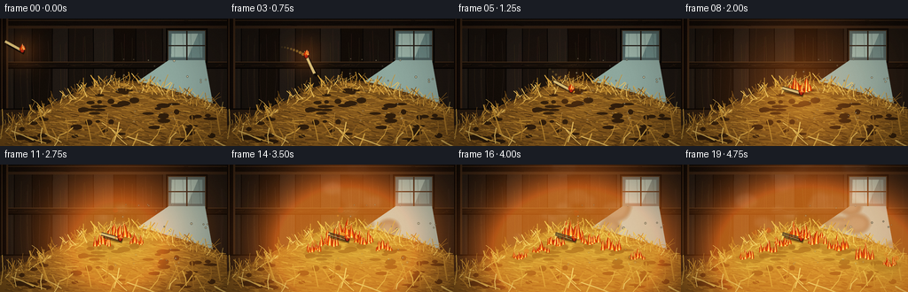
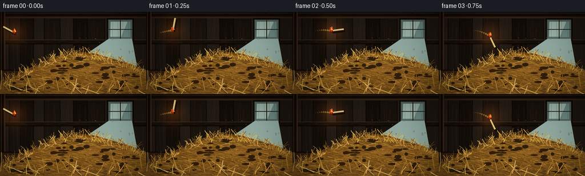
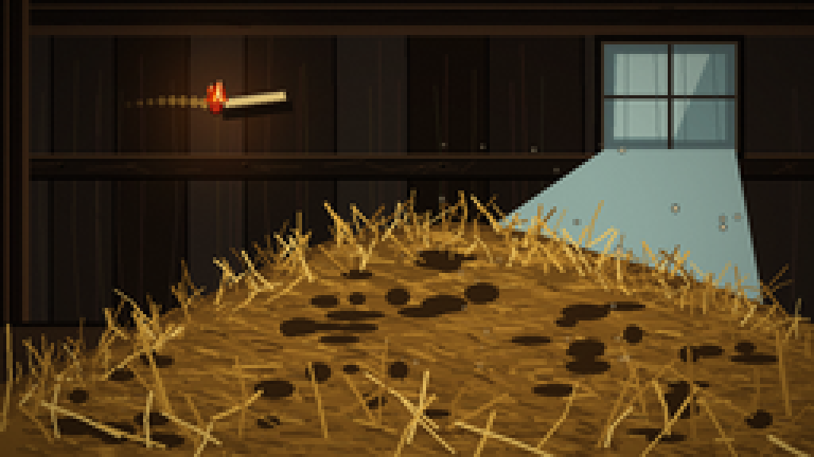
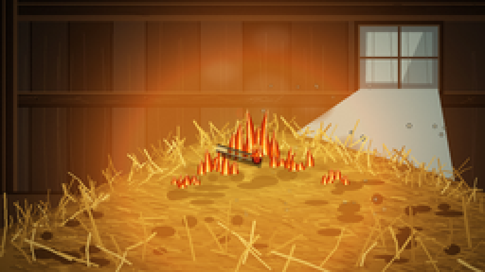
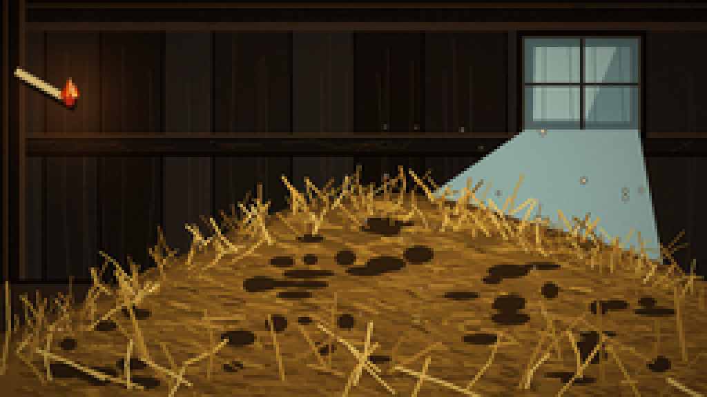
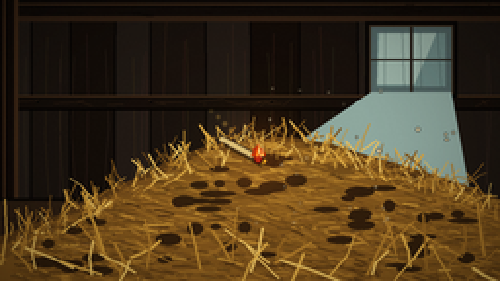
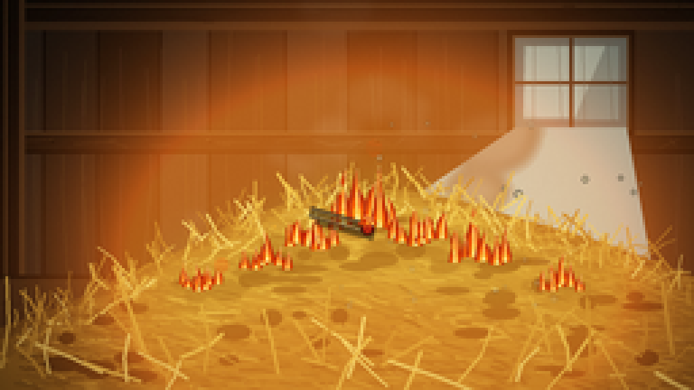
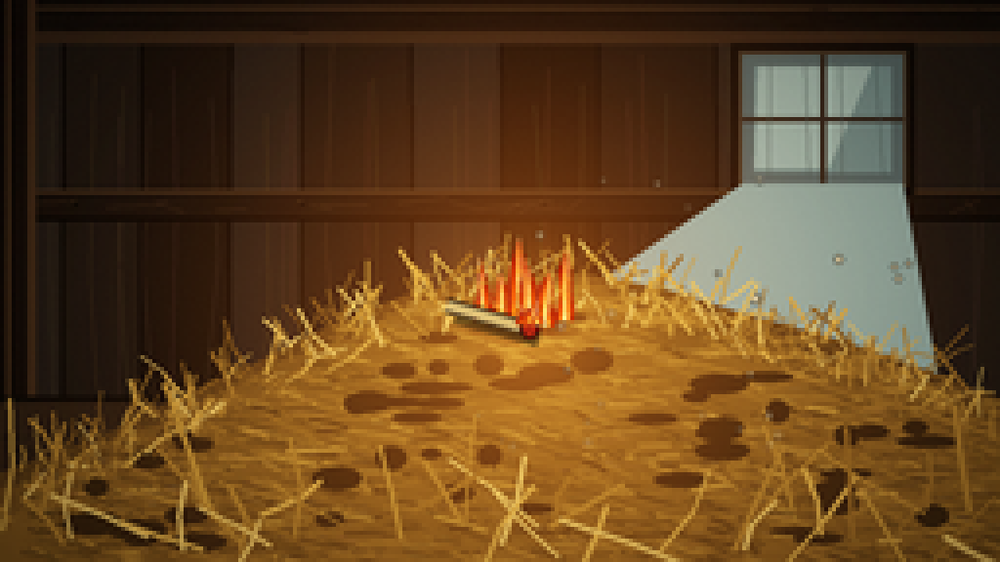
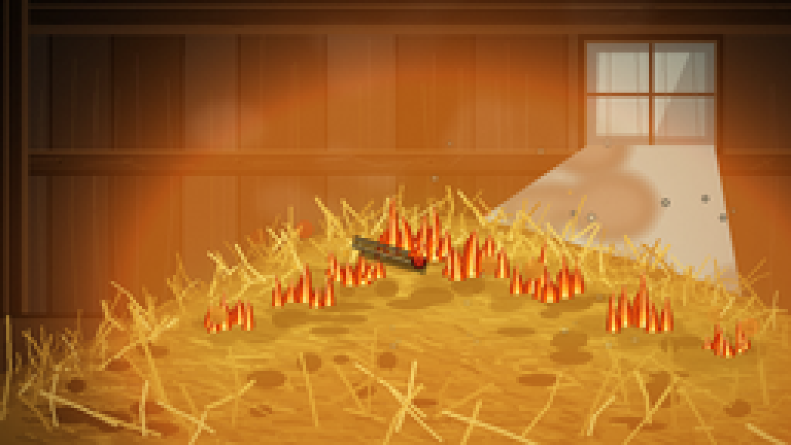

CODING AGENTS AS PIXEL WORLD MODELS
traex/DeepSeek-V4.1-Flash · material_0026
点击播放 · 原生 RGB 像素
逐轮保存的候选
回放视频、检查图与代码变化。
每份候选均可单独播放。实际图片检查记录在下方工具轨迹中。
候选 01播放与检查图
点击播放 · 原生 RGB 像素


展开代码变化
--- 上一保存版本
+++ 本次保存版本
@@ -0,0 +1,601 @@
+from pathlib import Path
+import math
+import random
+
+import numpy as np
+from PIL import Image, ImageDraw, ImageFilter
+
+import artifact_io
+
+
+ROOT = Path(__file__).resolve().parent
+W, H = 256, 144
+N, FPS = 20, 4.0
+SS = 4
+RW, RH = W * SS, H * SS
+
+
+def sx(value):
+ return int(round(value * SS))
+
+
+def scaled_points(points):
+ return [(sx(x), sx(y)) for x, y in points]
+
+
+def smoothstep(edge0, edge1, value):
+ t = max(0.0, min(1.0, (value - edge0) / (edge1 - edge0)))
+ return t * t * (3.0 - 2.0 * t)
+
+
+def layer():
+ return Image.new("RGBA", (RW, RH), (0, 0, 0, 0))
+
+
+def hay_top(x):
+ anchors_x = [0, 25, 45, 65, 85, 105, 128, 150, 170, 190, 215, 238, 256]
+ anchors_y = [121, 112, 102, 93, 83, 75, 71, 70, 74, 80, 87, 95, 102]
+ return float(np.interp(x, anchors_x, anchors_y))
+
+
+def make_background():
+ rng = random.Random(26031)
+
+ # Deep timber wall with a restrained cool window on the right.
+ top = np.array([18, 14, 12], dtype=np.float32)
+ bottom = np.array([45, 31, 21], dtype=np.float32)
+ rows = np.linspace(0.0, 1.0, RH, dtype=np.float32)[:, None, None]
+ arr = top[None, None, :] * (1.0 - rows) + bottom[None, None, :] * rows
+ arr = np.repeat(arr, RW, axis=1)
+ noise_rng = np.random.default_rng(807)
+ fine = noise_rng.normal(0.0, 2.2, (RH, RW, 1))
+ arr = np.clip(arr + fine, 0, 255).astype(np.uint8)
+ image = Image.fromarray(arr, "RGB").convert("RGBA")
+ draw = ImageDraw.Draw(image, "RGBA")
+
+ # Vertical wall planks.
+ x = -8
+ while x < W + 8:
+ width = rng.randint(16, 31)
+ shade = rng.randint(-10, 9)
+ draw.rectangle(
+ [sx(x), 0, sx(x + width), sx(107)],
+ fill=(max(8, 25 + shade), max(7, 19 + shade), max(6, 15 + shade), 82),
+ )
+ seam = (9, 7, 6, 150)
+ draw.line([sx(x), 0, sx(x + rng.uniform(-1, 1)), sx(107)], fill=seam, width=sx(1))
+ for _ in range(3):
+ gx = x + rng.uniform(2, max(3, width - 2))
+ bend = rng.uniform(-2.0, 2.0)
+ grain_color = (rng.randint(46, 67), rng.randint(34, 51), rng.randint(24, 38), rng.randint(22, 48))
+ draw.line(
+ [(sx(gx), sx(rng.uniform(8, 30))), (sx(gx + bend), sx(rng.uniform(52, 77))), (sx(gx - bend), sx(105))],
+ fill=grain_color,
+ width=max(1, sx(0.35)),
+ )
+ x += width
+
+ # Heavy top beam and a smaller crossbeam.
+ draw.rectangle([0, 0, RW, sx(9)], fill=(18, 13, 10, 255))
+ draw.rectangle([0, sx(8), RW, sx(11)], fill=(52, 35, 23, 255))
+ draw.line([0, sx(2), RW, sx(2)], fill=(70, 48, 30, 110), width=sx(0.8))
+ for _ in range(35):
+ bx = rng.uniform(0, W)
+ by = rng.uniform(2, 8)
+ draw.line([sx(bx), sx(by), sx(bx + rng.uniform(2, 11)), sx(by + rng.uniform(-0.5, 0.5))],
+ fill=(10, 7, 5, rng.randint(40, 90)), width=1)
+
+ draw.rectangle([0, sx(49), RW, sx(56)], fill=(21, 15, 11, 245))
+ draw.line([0, sx(49), RW, sx(49)], fill=(75, 51, 31, 120), width=sx(0.8))
+ draw.line([0, sx(56), RW, sx(56)], fill=(7, 5, 4, 180), width=sx(1.2))
+ for _ in range(22):
+ bx = rng.uniform(0, W)
+ draw.line([sx(bx), sx(rng.uniform(50, 55)), sx(bx + rng.uniform(2, 13)), sx(rng.uniform(50, 55))],
+ fill=(60, 40, 25, rng.randint(18, 42)), width=1)
+ for nail_x in (19, 77, 139, 207):
+ draw.ellipse([sx(nail_x - 0.7), sx(51.3), sx(nail_x + 0.7), sx(52.7)], fill=(8, 7, 6, 230))
+ draw.arc([sx(nail_x - 0.8), sx(51.2), sx(nail_x + 0.8), sx(52.8)], 180, 300, fill=(96, 67, 38, 90), width=1)
+
+ # Left post anchors the thrown object and adds depth.
+ draw.rectangle([0, 0, sx(9), RH], fill=(18, 12, 9, 255))
+ draw.rectangle([sx(7), 0, sx(9), RH], fill=(65, 43, 26, 125))
+ draw.line([sx(2), 0, sx(2), RH], fill=(88, 59, 35, 75), width=sx(0.7))
+
+ # Window recess, cool glass, mullions, and a faint shaft of daylight.
+ wx0, wy0, wx1, wy1 = 190, 14, 231, 47
+ draw.rectangle([sx(wx0 - 3), sx(wy0 - 3), sx(wx1 + 3), sx(wy1 + 3)], fill=(10, 8, 7, 255))
+ draw.rectangle([sx(wx0 - 1), sx(wy0 - 1), sx(wx1 + 1), sx(wy1 + 1)], fill=(60, 48, 35, 255))
+ draw.rectangle([sx(wx0), sx(wy0), sx(wx1), sx(wy1)], fill=(80, 101, 106, 255))
+ draw.rectangle([sx(wx0 + 3), sx(wy0 + 3), sx(wx1 - 3), sx(wy1 - 3)], fill=(107, 137, 141, 255))
+ draw.polygon(scaled_points([(wx0 + 4, wy0 + 3), (wx1 - 8, wy0 + 3), (wx1 - 19, wy1 - 4), (wx0 + 3, wy1 - 4)]),
+ fill=(153, 180, 179, 105))
+ draw.line([sx((wx0 + wx1) / 2), sx(wy0), sx((wx0 + wx1) / 2), sx(wy1)], fill=(39, 32, 27, 255), width=sx(1.6))
+ draw.line([sx(wx0), sx((wy0 + wy1) / 2), sx(wx1), sx((wy0 + wy1) / 2)], fill=(39, 32, 27, 255), width=sx(1.2))
+ for gx in range(wx0 + 7, wx1, 9):
+ draw.line([sx(gx), sx(wy0 + 2), sx(gx + rng.uniform(-3, 3)), sx(wy1 - 2)], fill=(61, 83, 86, 38), width=1)
+ draw.polygon(scaled_points([(wx0, wy1), (wx1, wy1), (244, 119), (144, 121), (111, 101)]),
+ fill=(139, 168, 169, 8))
+
+ # Floor boards and perspective seams.
+ draw.rectangle([0, sx(102), RW, RH], fill=(45, 31, 20, 255))
+ draw.line([0, sx(102), RW, sx(102)], fill=(12, 9, 7, 230), width=sx(1.5))
+ vanishing = (128, 101)
+ for bottom_x in (-70, -24, 24, 73, 123, 173, 223, 272, 326):
+ draw.line([sx(vanishing[0]), sx(vanishing[1]), sx(bottom_x), RH], fill=(18, 13, 9, 155), width=sx(0.8))
+ for y in (112, 124, 139):
+ draw.line([0, sx(y), RW, sx(y)], fill=(25, 18, 13, 90), width=1)
+ for _ in range(9):
+ gx = rng.uniform(0, W)
+ draw.line([sx(gx), sx(y + rng.uniform(-2, 2)), sx(gx + rng.uniform(4, 19)), sx(y + rng.uniform(-2, 2))],
+ fill=(91, 62, 36, 28), width=1)
+
+ # Broad hay shadow before the layered pile.
+ draw.ellipse([sx(24), sx(91), sx(258), sx(147)], fill=(10, 7, 4, 130))
+
+ # Three overlapping hay masses give the pile volume.
+ top_points = [(x, hay_top(x)) for x in range(0, 257, 4)]
+ back = top_points + [(256, 144), (0, 144)]
+ draw.polygon(scaled_points(back), fill=(84, 56, 23, 255))
+ mid = [(x, hay_top(x) + 4 + 1.5 * math.sin(x * 0.16)) for x in range(0, 257, 4)]
+ draw.polygon(scaled_points(mid + [(256, 144), (0, 144)]), fill=(111, 75, 28, 255))
+ front = [(x, max(hay_top(x) + 10, 91) + 2.0 * math.sin(x * 0.09 + 1.2)) for x in range(0, 257, 4)]
+ draw.polygon(scaled_points(front + [(256, 144), (0, 144)]), fill=(126, 86, 31, 255))
+
+ # Dense, curved straw texture. Strands stay inside the mound.
+ palette = [
+ (85, 56, 21), (101, 68, 25), (121, 82, 29), (145, 101, 36),
+ (169, 122, 45), (191, 144, 55), (211, 166, 72), (226, 190, 101),
+ ]
+ for i in range(1850):
+ x = rng.uniform(5, 254)
+ top = hay_top(x) + 2
+ y = rng.uniform(top, 143)
+ if y < top:
+ continue
+ base_angle = rng.uniform(-0.12, 0.45)
+ length = rng.uniform(4.5, 15.5)
+ bend = rng.uniform(-2.8, 2.8)
+ dx = math.cos(base_angle) * length
+ dy = math.sin(base_angle) * length
+ p0 = (x, y)
+ p1 = (x + dx * 0.48 + bend * 0.22, y + dy * 0.48 - abs(bend) * 0.08)
+ p2 = (x + dx, y + dy + bend * 0.12)
+ depth = smoothstep(70, 143, y)
+ palette_index = min(len(palette) - 1, max(0, int(rng.gauss(3.5 - depth * 1.3, 1.25))))
+ color = palette[palette_index]
+ alpha = rng.randint(160, 245)
+ width = max(1, sx(rng.uniform(0.65, 1.25)))
+ draw.line(scaled_points([p0, p1, p2]), fill=(*color, alpha), width=width)
+ if rng.random() < 0.24:
+ highlight = tuple(min(255, c + rng.randint(10, 25)) for c in color)
+ draw.line(scaled_points([(p0[0] + 0.7, p0[1] - 0.5), (p1[0] + 0.7, p1[1] - 0.5)]),
+ fill=(*highlight, 100), width=max(1, sx(0.3)))
+
+ # Dark pockets and crisp outer straw tips.
+ for _ in range(55):
+ x = rng.uniform(20, 245)
+ y = rng.uniform(hay_top(x) + 9, 139)
+ rx = rng.uniform(2.5, 8.0)
+ ry = rng.uniform(1.0, 3.2)
+ draw.ellipse([sx(x - rx), sx(y - ry), sx(x + rx), sx(y + ry)],
+ fill=(48, 31, 14, rng.randint(28, 78)))
+ for _ in range(280):
+ x = rng.uniform(1, 255)
+ y = hay_top(x) + rng.uniform(-1, 12)
+ angle = rng.uniform(-2.5, -0.35)
+ length = rng.uniform(4, 15)
+ p1 = (x + math.cos(angle) * length * 0.55, y + math.sin(angle) * length * 0.55)
+ p2 = (x + math.cos(angle + rng.uniform(-0.28, 0.28)) * length,
+ y + math.sin(angle + rng.uniform(-0.28, 0.28)) * length)
+ color = rng.choice(palette[2:])
+ draw.line(scaled_points([(x, y), p1, p2]), fill=(*color, rng.randint(150, 235)),
+ width=max(1, sx(rng.uniform(0.45, 0.95))))
+
+ # A few foreground straws crossing the bottom edge.
+ for _ in range(45):
+ x = rng.uniform(-4, 260)
+ y = rng.uniform(130, 146)
+ length = rng.uniform(12, 35)
+ angle = rng.uniform(-2.9, -0.4)
+ p2 = (x + math.cos(angle) * length, y + math.sin(angle) * length)
+ draw.line(scaled_points([(x, y), ((x + p2[0]) / 2 + rng.uniform(-3, 3), (y + p2[1]) / 2), p2]),
+ fill=(*rng.choice(palette[3:]), rng.randint(130, 210)),
+ width=max(1, sx(rng.uniform(0.75, 1.45))))
+
+ # Static vignette and subtle color grade.
+ pixels = np.asarray(image, dtype=np.float32)
+ yy, xx = np.mgrid[0:H, 0:W]
+ dx = (xx - W * 0.51) / (W * 0.62)
+ dy = (yy - H * 0.51) / (H * 0.75)
+ vignette = np.clip(1.05 - 0.34 * (dx * dx + dy * dy), 0.64, 1.0)
+ vignette = np.asarray(Image.fromarray((vignette * 255).astype(np.uint8)).resize((RW, RH), Image.Resampling.BILINEAR),
+ dtype=np.float32)[..., None] / 255.0
+ pixels[..., :3] *= vignette
+ pixels[..., 0] *= 1.025
+ pixels[..., 2] *= 0.94
+ return Image.fromarray(np.clip(pixels, 0, 255).astype(np.uint8), "RGBA")
+
+
+BASE = make_background()
+
+
+FIRE_CLUSTERS = [
+ {"x": 134, "y": 83, "birth": 1.20, "height": 28, "width": 25, "seed": 3},
+ {"x": 115, "y": 91, "birth": 2.08, "height": 21, "width": 19, "seed": 8},
+ {"x": 154, "y": 89, "birth": 2.38, "height": 23, "width": 20, "seed": 13},
+ {"x": 98, "y": 98, "birth": 2.82, "height": 18, "width": 17, "seed": 19},
+ {"x": 177, "y": 96, "birth": 2.98, "height": 24, "width": 21, "seed": 24},
+ {"x": 74, "y": 106, "birth": 3.40, "height": 17, "width": 16, "seed": 31},
+ {"x": 207, "y": 106, "birth": 3.62, "height": 20, "width": 18, "seed": 37},
+ {"x": 235, "y": 114, "birth": 4.02, "height": 14, "width": 14, "seed": 43},
+]
+
+
+def fire_strength(cluster, t):
+ age = t - cluster["birth"]
+ if age <= 0:
+ return 0.0
+ grow = smoothstep(0.0, 0.58, age)
+ sustain = 0.82 + 0.18 * math.sin(t * 7.2 + cluster["seed"])
+ return grow * sustain
+
+
+def match_pose(frame):
+ if frame <= 5:
+ u = frame / 5.0
+ x = 25.0 + 107.0 * u
+ y = 36.0 + 45.0 * u - 22.0 * math.sin(math.pi * u)
+ angle = 0.5 + 2.0 * math.pi * u
+ return x, y, angle, True
+ settle = min(1.0, (frame - 5) / 2.0)
+ x = 132.0 + 3.5 * settle
+ y = 81.0 + 3.0 * settle
+ angle = 0.5 - 0.22 * settle
+ return x, y, angle, False
+
+
+def draw_tongue(draw, cx, base_y, height, width, phase, colors, alpha_scale=1.0):
+ if height < 1.2 or width < 1.0:
+ return
+ lean = math.sin(phase * 1.7) * width * 0.16
+ tip = (cx + lean + math.sin(phase * 3.1) * width * 0.14, base_y - height)
+
+ def polygon_for(h, w):
+ return scaled_points([
+ (cx - w * 0.50, base_y),
+ (cx - w * 0.46 + math.sin(phase * 1.4) * w * 0.06, base_y - h * 0.20),
+ (cx - w * 0.35 + math.sin(phase * 2.1) * w * 0.12, base_y - h * 0.44),
+ (cx - w * 0.21 + math.sin(phase * 2.8) * w * 0.16, base_y - h * 0.69),
+ tip,
+ (cx + w * 0.18 + math.sin(phase * 2.5) * w * 0.14, base_y - h * 0.68),
+ (cx + w * 0.35 + math.sin(phase * 1.8) * w * 0.10, base_y - h * 0.42),
+ (cx + w * 0.48, base_y - h * 0.18),
+ (cx + w * 0.45, base_y),
+ ])
+
+ specs = [
+ (1.00, 1.00, colors[0], 0.90),
+ (0.73, 0.69, colors[1], 0.96),
+ (0.45, 0.42, colors[2], 1.00),
+ (0.22, 0.22, colors[3], 0.94),
+ ]
+ for hf, wf, color, alpha_mul in specs:
+ a = int(255 * alpha_mul * alpha_scale)
+ draw.polygon(polygon_for(height * hf, width * wf), fill=(*color, a))
+
+
+def draw_fire(fire_layer, t):
+ draw = ImageDraw.Draw(fire_layer, "RGBA")
+ colors = [(188, 37, 6), (247, 82, 8), (255, 164, 22), (255, 239, 150)]
+ for cluster in FIRE_CLUSTERS:
+ strength = fire_strength(cluster, t)
+ if strength <= 0:
+ continue
+ age = t - cluster["birth"]
+ h = cluster["height"] * strength
+ w = cluster["width"] * (0.55 + 0.45 * smoothstep(0.0, 0.8, age))
+ n = 6
+ for i in range(n):
+ rel = (i - (n - 1) / 2) / max(1, (n - 1) / 2)
+ phase = t * 9.3 + cluster["seed"] * 1.71 + i * 2.37
+ flicker = 0.70 + 0.22 * math.sin(phase) + 0.08 * math.sin(phase * 2.7)
+ tongue_h = max(1.0, h * flicker * (0.66 + 0.34 * math.cos(rel * 1.2)))
+ tongue_w = max(1.3, w * (0.22 + 0.09 * (1.0 - abs(rel))))
+ x = cluster["x"] + rel * w * 0.43 + math.sin(phase * 0.8) * 0.9
+ base_y = cluster["y"] + math.cos(rel * 2.1 + phase * 0.2) * 1.4
+ draw_tongue(draw, x, base_y, tongue_h, tongue_w, phase, colors, 0.92)
+
+
+def add_firelight(scene, t):
+ yy, xx = np.mgrid[0:H, 0:W].astype(np.float32)
+ total = np.zeros((H, W), dtype=np.float32)
+ core = np.zeros((H, W), dtype=np.float32)
+ for cluster in FIRE_CLUSTERS:
+ strength = fire_strength(cluster, t)
+ if strength <= 0:
+ continue
+ sigma = 27.0 + cluster["height"] * 0.85
+ d2 = (xx - cluster["x"]) ** 2 + (yy - cluster["y"]) ** 2
+ total += strength * np.exp(-d2 / (2.0 * sigma * sigma))
+ core += strength * np.exp(-d2 / (2.0 * (sigma * 0.31) ** 2))
+
+ # The burning match contributes a small traveling pool of light.
+ mx, my, _, flying = match_pose(int(round(t * FPS)))
+ match_level = 0.34 if flying else 0.18
+ d2 = (xx - mx) ** 2 + (yy - my) ** 2
+ total += match_level * np.exp(-d2 / (2.0 * 14.0 ** 2))
+ core += match_level * 0.35 * np.exp(-d2 / (2.0 * 5.0 ** 2))
+
+ total = np.clip(total, 0.0, 1.45)
+ core = np.clip(core, 0.0, 1.0)
+ warm = np.zeros((H, W, 3), dtype=np.float32)
+ warm[..., 0] = np.clip(total * 0.78 + core * 0.16, 0.0, 1.0)
+ warm[..., 1] = np.clip(total * 0.34 + core * 0.15, 0.0, 1.0)
+ warm[..., 2] = np.clip(total * 0.065 + core * 0.05, 0.0, 1.0)
+ warm_img = Image.fromarray((warm * 255).astype(np.uint8), "RGB").resize((RW, RH), Image.Resampling.BILINEAR)
+ warm_large = np.asarray(warm_img, dtype=np.float32) / 255.0
+ base = np.asarray(scene, dtype=np.float32) / 255.0
+ lit_rgb = 1.0 - (1.0 - base[..., :3]) * (1.0 - warm_large * 0.68)
+ lit_rgb = np.clip(lit_rgb * 255.0, 0, 255).astype(np.uint8)
+ result = Image.fromarray(lit_rgb, "RGB").convert("RGBA")
+ result.putalpha(scene.getchannel("A"))
+ return result
+
+
+def draw_scorch(scene, t):
+ char_layer = layer()
+ draw = ImageDraw.Draw(char_layer, "RGBA")
+ rng = random.Random(6141)
+ for cluster in FIRE_CLUSTERS:
+ age = t - cluster["birth"]
+ if age <= -0.12:
+ continue
+ spread = smoothstep(-0.12, 0.85, age)
+ if spread <= 0:
+ continue
+ for _ in range(9):
+ ox = rng.uniform(-1.0, 1.0) * (5.0 + spread * 9.0)
+ oy = rng.uniform(-0.25, 0.55) * (3.0 + spread * 4.0)
+ rx = rng.uniform(3.0, 7.0) * (0.55 + spread * 0.75)
+ ry = rng.uniform(1.1, 2.7) * (0.65 + spread * 0.55)
+ alpha = int(35 + spread * 82)
+ draw.ellipse([sx(cluster["x"] + ox - rx), sx(cluster["y"] + oy - ry),
+ sx(cluster["x"] + ox + rx), sx(cluster["y"] + oy + ry)],
+ fill=(25, 15, 8, alpha))
+ char_layer = char_layer.filter(ImageFilter.GaussianBlur(sx(0.6)))
+ result = scene.copy()
+ result.alpha_composite(char_layer)
+ return result
+
+
+def make_smoke_particles():
+ rng = random.Random(99173)
+ particles = []
+ for i in range(42):
+ cluster = FIRE_CLUSTERS[rng.randrange(len(FIRE_CLUSTERS))]
+ particles.append({
+ "x": cluster["x"] + rng.uniform(-8, 8),
+ "y": cluster["y"] - rng.uniform(3, 9),
+ "birth": cluster["birth"] + rng.uniform(0.05, 2.6),
+ "life": rng.uniform(1.25, 2.8),
+ "drift": rng.uniform(-7, 11),
+ "rise": rng.uniform(28, 55),
+ "r0": rng.uniform(2.0, 5.0),
+ "r1": rng.uniform(10.0, 22.0),
+ "phase": rng.uniform(0, 2 * math.pi),
+ })
+ return particles
+
+
+SMOKE_PARTICLES = make_smoke_particles()
+
+
+def draw_smoke(scene, t):
+ smoke = layer()
+ draw = ImageDraw.Draw(smoke, "RGBA")
+ for p in SMOKE_PARTICLES:
+ age = t - p["birth"]
+ if age < 0 or age > p["life"]:
+ continue
+ frac = age / p["life"]
+ x = p["x"] + p["drift"] * age + math.sin(age * 2.2 + p["phase"]) * (2.0 + age * 2.0)
+ y = p["y"] - p["rise"] * age - 3.0 * age * age
+ radius = p["r0"] + (p["r1"] - p["r0"]) * frac
+ fade = math.sin(math.pi * min(1.0, frac)) * (1.0 - 0.45 * frac)
+ alpha = int(34 * fade)
+ if alpha <= 1:
+ continue
+ color = (96 + int(20 * (1 - frac)), 86 + int(17 * (1 - frac)), 78 + int(12 * (1 - frac)), alpha)
+ draw.ellipse([sx(x - radius), sx(y - radius * 0.72), sx(x + radius), sx(y + radius * 0.72)], fill=color)
+ smoke = smoke.filter(ImageFilter.GaussianBlur(sx(2.5)))
+ result = scene.copy()
+ result.alpha_composite(smoke)
+ return result
+
+
+def make_embers():
+ rng = random.Random(4049)
+ embers = []
+ for i in range(52):
+ cluster = FIRE_CLUSTERS[rng.randrange(len(FIRE_CLUSTERS))]
+ embers.append({
+ "x": cluster["x"] + rng.uniform(-6, 6),
+ "y": cluster["y"] - rng.uniform(1, 6),
+ "birth": cluster["birth"] + rng.uniform(0.15, 2.8),
+ "life": rng.uniform(0.55, 1.35),
+ "drift": rng.uniform(-9, 12),
+ "rise": rng.uniform(18, 44),
+ "size": rng.uniform(0.55, 1.35),
+ "phase": rng.uniform(0, 2 * math.pi),
+ })
+ return embers
+
+
+EMBERS = make_embers()
+
+
+def draw_embers(fire_layer, t):
+ draw = ImageDraw.Draw(fire_layer, "RGBA")
+ for e in EMBERS:
+ age = t - e["birth"]
+ if age < 0 or age > e["life"]:
+ continue
+ frac = age / e["life"]
+ x = e["x"] + e["drift"] * age + math.sin(e["phase"] + age * 7.0) * 2.2
+ y = e["y"] - e["rise"] * age + 5.0 * age * age
+ flicker = 0.55 + 0.45 * math.sin(e["phase"] + age * 18.0)
+ alpha = int(235 * (1.0 - frac) * flicker)
+ radius = e["size"] * (0.8 + 0.3 * flicker)
+ if alpha > 3:
+ draw.ellipse([sx(x - radius), sx(y - radius), sx(x + radius), sx(y + radius)],
+ fill=(255, 181, 38, alpha))
+ if e["size"] > 0.9:
+ draw.ellipse([sx(x - radius * 2.5), sx(y - radius * 2.5),
+ sx(x + radius * 2.5), sx(y + radius * 2.5)],
+ fill=(255, 77, 8, alpha // 4))
+
+
+def draw_impact_sparks(fire_layer, t):
+ impact = 1.25
+ age = t - impact
+ if age < 0 or age > 0.65:
+ return
+ draw = ImageDraw.Draw(fire_layer, "RGBA")
+ rng = random.Random(771)
+ for i in range(18):
+ angle = rng.uniform(-2.8, -0.35)
+ speed = rng.uniform(22, 58)
+ x = 133.0 + math.cos(angle) * speed * age
+ y = 81.0 + math.sin(angle) * speed * age + 35.0 * age * age
+ tail = max(0.8, 3.2 * (1.0 - age / 0.65))
+ tx = x - math.cos(angle) * tail
+ ty = y - math.sin(angle) * tail
+ alpha = int(240 * (1.0 - age / 0.65))
+ draw.line([sx(tx), sx(ty), sx(x), sx(y)], fill=(255, 174, 35, alpha), width=max(1, sx(0.7)))
+
+
+def draw_match(scene, frame, t):
+ match_layer = layer()
+ draw = ImageDraw.Draw(match_layer, "RGBA")
+ x, y, angle, flying = match_pose(frame)
+
+ # A sparse trail makes the throw direction legible without hiding the scene.
+ if flying:
+ u = frame / 5.0
+ for k in range(1, 9):
+ uu = max(0.0, u - k * 0.032)
+ tx = 25.0 + 107.0 * uu
+ ty = 36.0 + 45.0 * uu - 22.0 * math.sin(math.pi * uu)
+ alpha = max(0, 62 - k * 7)
+ radius = 1.8 - k * 0.12
+ draw.ellipse([sx(tx - radius), sx(ty - radius), sx(tx + radius), sx(ty + radius)],
+ fill=(255, 194, 73, alpha))
+
+ length = 22.0
+ head = (x, y)
+ tail = (x - math.cos(angle) * length, y - math.sin(angle) * length)
+ px = math.cos(angle + math.pi / 2) * 1.25
+ py = math.sin(angle + math.pi / 2) * 1.25
+ shadow = (2.2, 3.0)
+ draw.line(scaled_points([(tail[0] + shadow[0], tail[1] + shadow[1]), (head[0] + shadow[0], head[1] + shadow[1])]),
+ fill=(10, 7, 4, 115), width=sx(3.7))
+ draw.line(scaled_points([tail, head]), fill=(61, 43, 25, 245), width=sx(4.0))
+ draw.line(scaled_points([tail, head]), fill=(217, 188, 116, 255), width=sx(2.5))
+ draw.line(scaled_points([(tail[0] + px, tail[1] + py), (head[0] + px, head[1] + py)]),
+ fill=(247, 222, 154, 185), width=max(1, sx(0.55)))
+
+ if not flying and frame >= 9:
+ burn = smoothstep(9, 15, frame)
+ draw.line(scaled_points([(tail[0] * burn + head[0] * (1 - burn), tail[1] * burn + head[1] * (1 - burn)), head]),
+ fill=(35, 23, 13, int(130 * burn)), width=sx(2.0))
+
+ # Match head.
+ draw.ellipse([sx(x - 2.4), sx(y - 2.8), sx(x + 2.4), sx(y + 2.8)], fill=(57, 11, 6, 255))
+ draw.ellipse([sx(x - 1.7), sx(y - 2.1), sx(x + 1.7), sx(y + 2.1)], fill=(181, 39, 17, 255))
+ draw.arc([sx(x - 1.5), sx(y - 1.8), sx(x + 1.5), sx(y + 1.8)], 195, 325, fill=(242, 91, 30, 210), width=max(1, sx(0.45)))
+
+ # The flame always rises vertically from the head, independent of stick rotation.
+ flame_h = 7.0 if flying else 8.0
+ flame_w = 5.4
+ if frame >= 6:
+ flame_h *= 0.70 + 0.10 * math.sin(t * 12.0)
+ colors = [(185, 39, 7), (245, 82, 9), (255, 171, 28), (255, 242, 164)]
+ for i, (ox, hf, wf, phase) in enumerate([(-1.3, 0.82, 0.80, 0.4), (0.6, 1.0, 1.0, 2.0), (1.8, 0.68, 0.65, 3.8)]):
+ draw_tongue(draw, x + ox, y - 1.0, flame_h * hf * (0.88 + 0.12 * math.sin(t * 15 + i)),
+ flame_w * wf, phase + t * 12.0, colors, 0.96)
+
+ scene.alpha_composite(match_layer)
+
+
+def make_dust():
+ rng = random.Random(7123)
+ dust = []
+ for i in range(34):
+ dust.append({
+ "x": rng.uniform(122, 239),
+ "y": rng.uniform(44, 119),
+ "vx": rng.uniform(-0.6, 1.1),
+ "vy": rng.uniform(-1.4, -0.25),
+ "phase": rng.uniform(0, 2 * math.pi),
+ "size": rng.uniform(0.45, 1.15),
+ })
+ return dust
+
+
+DUST = make_dust()
+
+
+def draw_dust(scene, t):
+ dust_layer = layer()
+ draw = ImageDraw.Draw(dust_layer, "RGBA")
+ for p in DUST:
+ x = (p["x"] + p["vx"] * t + math.sin(t * 0.7 + p["phase"]) * 2.0) % W
+ y = p["y"] + p["vy"] * t + math.sin(t * 0.55 + p["phase"]) * 1.8
+ if y < 45 or y > 125:
+ continue
+ alpha = int(45 + 24 * (0.5 + 0.5 * math.sin(t * 3.1 + p["phase"])))
+ radius = p["size"]
+ draw.ellipse([sx(x - radius), sx(y - radius), sx(x + radius), sx(y + radius)],
+ fill=(214, 194, 151, alpha))
+ dust_layer = dust_layer.filter(ImageFilter.GaussianBlur(sx(0.28)))
+ scene.alpha_composite(dust_layer)
+
+
+def render_frame(frame):
+ t = frame / FPS
+ scene = BASE.copy()
+ scene = draw_scorch(scene, t)
+ scene = draw_smoke(scene, t)
+ scene = add_firelight(scene, t)
+ draw_dust(scene, t)
+
+ fire_layer = layer()
+ draw_fire(fire_layer, t)
+ draw_impact_sparks(fire_layer, t)
+ draw_embers(fire_layer, t)
+ scene.alpha_composite(fire_layer)
+
+ draw_match(scene, frame, t)
+
+ # A final dark edge and restrained sensor-like grain keep the scene cinematic.
+ arr = np.asarray(scene.convert("RGB"), dtype=np.float32)
+ yy, xx = np.mgrid[0:RH, 0:RW].astype(np.float32)
+ dx = (xx - RW * 0.52) / (RW * 0.72)
+ dy = (yy - RH * 0.52) / (RH * 0.86)
+ vignette = np.clip(1.02 - 0.13 * (dx * dx + dy * dy), 0.82, 1.0)[..., None]
+ arr *= vignette
+ grain_rng = np.random.default_rng(1200 + frame)
+ grain = grain_rng.normal(0.0, 1.55, (RH, RW, 1))
+ arr = np.clip(arr + grain, 0, 255)
+ final = Image.fromarray(arr.astype(np.uint8), "RGB")
+ final = final.resize((W, H), Image.Resampling.LANCZOS)
+ return np.asarray(final, dtype=np.uint8)
+
+
+def main():
+ frames = [render_frame(i) for i in range(N)]
+ artifact_io.save(frames, ROOT)
+
+
+if __name__ == "__main__":
+ main()
可观测工具轨迹
实际执行的命令与返回图片。
命令 1exit 0
/bin/bash -c "pwd && rg --files -g 'prompt.txt' -g 'GENERATION_RULES.md' -g 'task_spec.json' -g '"'!node_modules'"' -g '"'!vendor'"'"
命令 2exit 0
/bin/bash -c 'git status --short && find . -maxdepth 2 -type f | sort | head -200'
命令 3exit 0
/bin/bash -c 'cat prompt.txt'
命令 4exit 0
/bin/bash -c 'cat GENERATION_RULES.md'
命令 5exit 0
/bin/bash -c 'cat task_spec.json'
命令 6exit 0
/bin/bash -c "sed -n '1,240p' artifact_io.py && printf '\\n---PLAYER---\\n' && sed -n '1,220p' player_template.html"
命令 7exit 0
/bin/bash -c "python - <<'PY'
import PIL, numpy
print('PIL', PIL.__version__, 'numpy', numpy.__version__)
PY"命令 8exit 0
/bin/bash -c 'python generate.py'
命令 9exit 0
/bin/bash -c "python - <<'PY'
from PIL import Image
for i in [0,2,5,7,10,13,16,19]:
im=Image.open(f'frames/{i:02d}.png')
im.resize((1024,576), Image.Resampling.NEAREST).save(f'.tmp/frame_{i:02d}_large.png')
PY"命令 10exit 1
/bin/bash -c 'which ffmpeg && ffmpeg -version | head -1'
命令 11exit 0
/bin/bash -c 'which convert || true; which magick || true; which avconv || true; ls -lh pixels.npz inspection.png frames | head'
命令 12exit 0
/bin/bash -c "python - <<'PY'
from PIL import Image
im=Image.open('inspection.png')
print(im.size)
# crop around the arc and pile from contact sheet
im.crop((0,0,768,350)).resize((1536,700), Image.Resampling.NEAREST).save('.tmp/contact_top.png')
PY"命令 13exit 0
/bin/bash -c "python - <<'PY'
import json, numpy as np
from PIL import Image
# verify all decoded pixels exactly match source PNGs
z=np.load('pixels.npz')['pixels']
frames=[]
for i in range(20):
f=np.array(Image.open(f'frames/{i:02d}.png'))
dec=((z[:,:,i].astype(np.uint32)>>16)&255).astype(np.uint8)
print(i, f.shape, np.array_equal(f[:,:,0],dec))
PY"命令 14exit 1
/bin/bash -c "python - <<'PY'
from PIL import Image
import numpy as np
for i in range(20):
a=np.asarray(Image.open(f'frames/{i:02d}.png'),dtype=np.float32)
print(f'{i:02d}', 'mean', a.mean().round(1), 'fire', a[55:110,80:225,0].mean().round(1), 'diff', (0 if i==0 else np.abs(a-np.asarray(Image.open(f\"frames/{i-1:02d}.png\"),dtype=np.float32)).mean()).round(2))
PY"命令 15exit 0
/bin/bash -c "python - <<'PY'
from PIL import Image
import numpy as np
prev=None
for i in range(20):
a=np.asarray(Image.open(f'frames/{i:02d}.png'),dtype=np.float32)
diff=0 if prev is None else np.abs(a-prev).mean()
print(f'{i:02d} mean={a.mean():.1f} fire={a[55:110,80:225,0].mean():.1f} diff={diff:.2f}')
prev=a
PY"命令 16exit 0
/bin/bash -c 'python -m py_compile generate.py && test -s pixels.npz && test -s inspection.png && test -s transition_check.png && test -s index.html && test "$(find frames -maxdepth 1 -name '"'*.png' | wc -l)\" -eq 20 && python - <<'PY'
import json
from pathlib import Path
import numpy as np
from PIL import Image
z = np.load('pixels.npz')['pixels']
assert z.shape == (144, 256, 20), z.shape
for i in range(20):
im = Image.open(Path('frames') / f'{i:02d}.png')
assert im.size == (256, 144) and im.mode == 'RGB', (i, im.size, im.mode)
html = Path('index.html').read_text()
assert 'const DATA=' in html and '\"frames\":20' in html and '\"fps\":4.0' in html
print('shape', z.shape, 'dtype', z.dtype)
print('frames', 20, 'fps', 4.0, 'duration', 5.0)
print('artifacts', ', '.join(sorted(p.name for p in Path('.').glob('*') if p.name in {'generate.py','pixels.npz','inspection.png','transition_check.png','index.html'})))
PY"命令 17exit 0
/bin/bash -c 'git status --short -- generate.py frames pixels.npz inspection.png transition_check.png index.html && du -sh frames pixels.npz inspection.png index.html'
视觉工具实际返回图片 1

视觉工具实际返回图片 2

视觉工具实际返回图片 3

视觉工具实际返回图片 4

视觉工具实际返回图片 5

视觉工具实际返回图片 6

视觉工具实际返回图片 7

视觉工具实际返回图片 8

保存候选 1 份；完成命令 17 次；可验证图片返回 8 张。原始 API 响应与完整日志保留在本地。